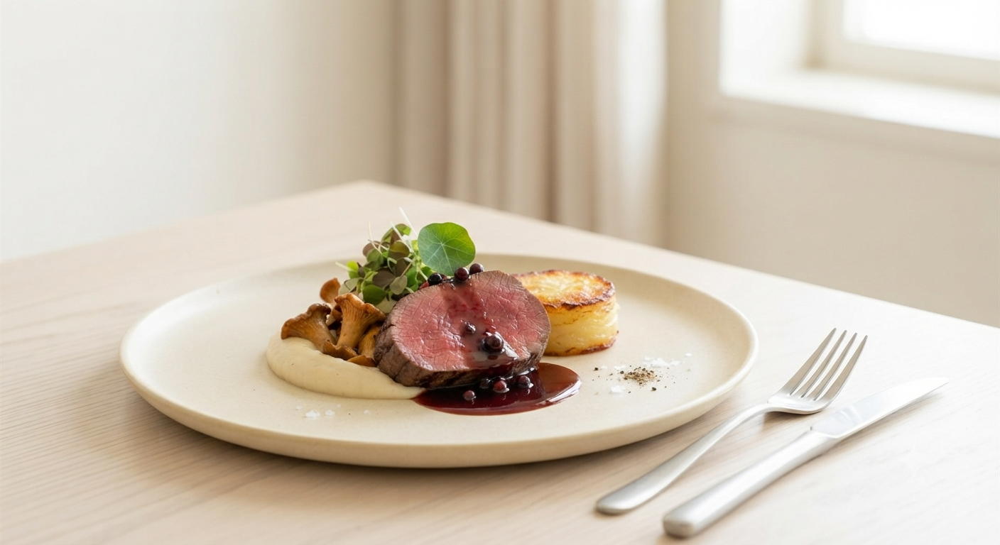
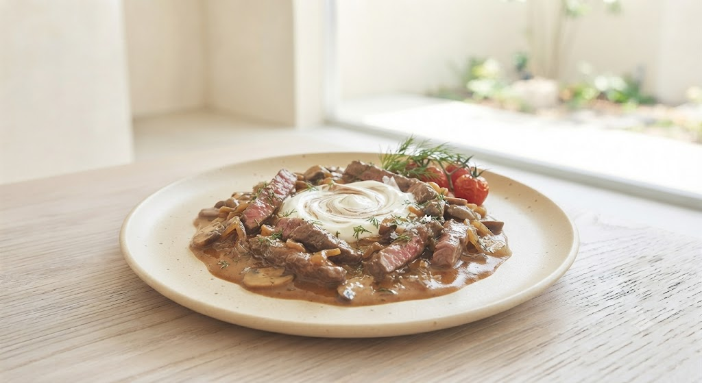

料理人

作り手の想い
「すべてを見せる」という矜持
調理学校を卒業後、道内三つのホテルで二十年間、王道を歩んできました。 しかし、決まった枠の中では、食材への愛着や、お客様一人ひとりに合わせた「一皿の物語」を表現しきれませんでした。
朝、自ら直売所を回り、土の香りが残る野菜を選ぶ。 オープンキッチンで、切る音からフランベの炎まで、すべてを愉しんでいただく。 独立した今、私の料理には「隠し事」はありません。
オーナーシェフ 佐藤
Executive Chef Sato

Petit Jardin
帯広の静かな街角に佇む、
わずか六席のカウンター。
そこは、大地の息吹を感じる
「小さな箱庭」という名の特等席。
バターの弾ぜる音、季節の移ろいを映す彩りを、
シェフの手から生まれる魔法のようなひととき。
大切な人と、心満たされる余白をお愉しみください。
十勝が誇る厳選された牛肉を、シェフが鉄板で丁寧に焼き目をつけ、旨味を閉じ込める。 家庭の味とは一線を画す、幾重にも重なる深いコクと、口の中でほどけるような食感。 プティジャルダンでしか出逢えない、記憶に残る一皿です。
Wine Pairing
シェフ厳選：熟成赤ワインとのマリアージュ

料理人
調理学校を卒業後、道内三つのホテルで二十年間、王道を歩んできました。 しかし、決まった枠の中では、食材への愛着や、お客様一人ひとりに合わせた「一皿の物語」を表現しきれませんでした。
朝、自ら直売所を回り、土の香りが残る野菜を選ぶ。 オープンキッチンで、切る音からフランベの炎まで、すべてを愉しんでいただく。 独立した今、私の料理には「隠し事」はありません。
オーナーシェフ 佐藤
Executive Chef Sato
「オープンキッチンのカウンターで、じっくりとシェフの魔法の手を堪能。盛り付けも美しく、贅沢な満足感がありました。」
「十勝産の野菜の甘みに驚きました。ビーフストロガノフは家庭の味とは全く別物。ステキな時間がゆっくりと過ぎていくお店です。」
「記念日に利用。6名限定という特別感が心地よい。ノンアルコールのローズも美味しく、細部までシェフのこだわりを感じます。」
Future Visions
より心満たされる体験のために、準備を進めている新しい取り組みです。
その日にお愉しみいただいた十勝の旬食材、ペアリングしたワインの解説、シェフの手書きメッセージを記した上質な特製メニューカードを食後に贈呈。ご自宅へ帰られた後も、美味の余韻を呼び覚ます旅の記念に。
看板メニューであるビーフストロガノフの極上ベースソースや、十勝野菜を引き立てる自家製和風フレンチドレッシング。お店の余韻をそのままご家庭で味わえる、オリジナル商品の瓶詰めギフト。
Reservation by Phone
0155-67-7030Opening Hours
完全予約制 / 月曜定休
Lunch & Dinner Course Only
プティジャルダン（Petit Jardin）
〒080-0802
北海道帯広市東2条南21丁目2−1 東
お車で：帯広駅から車で約6分。国道から一本入った、静かな住宅街に佇む隠れ家レストランです。
駐車場：店舗前に4台分の駐車スペースを完備しております。